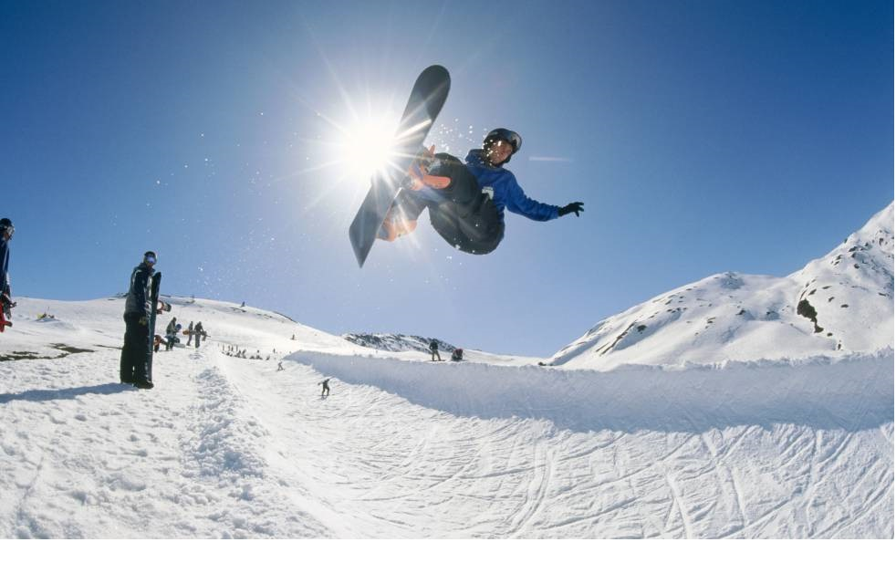

CONSEJOS
El snowboard puede parecer muy complejo, pero en el momento en el que le pillas el truco
es tan fácil como montar en bicicleta.
Os voy a dar los consejos que me dió a mí mi monitor, y con los que en tres dias conseguí bajarme una pista negra haciendo giros sin caerme.
Lo primero es mentalizarse de que nos vamos a caer, pero no una vez, sino mil y así no nos entristezeremos cuando nos caígamos porque lo que vamos a conseguir cayendonos es aprender y aprender
(1º paso para aprender a hacer giros) Aprender a mantener un punto de inclinación de tabla entre talones y puntas de cara a la pendiente
(2º paso para aprender a hacer giros) Aprende a mantener un punto de inclinación de tabla entre talones y puntas de espaldas a la pendiente
(3º paso para aprender a hacer giros) Después de dominar esas dos maneras de bajar una pendiente, llega el momento de combinarlos. La técnica del giro está en poner el peso de nuestro cuerpo en la parte delantera de la tabla mientras señalamos nuestro destino, de manera que nuestra tabla al ser más estracha por el centro consigue hacer un giro
El cuerpo siempre debe estra en el medio de la tabla
El cuerpo en la tabla debe estra relajado, no tieso
TRUCOS
El freestyle en el snowboard es mucho más divertido que ne el ski. tiene mucha variedad de trucos y aquí os voy a hacer un listado de los más fáciles.
Antes de los trucos os voy a dar un consejo, y es que en los saltos la tabla debe eestra totalmente paralela a la pista porque si no lo está os desequilibrareis en el aire y os caereis.
Ollie: se trata de un salto simple en el que primero levantareis el nose y acto seguido saltareis de manrea que el salto es mas equilibrado
Manual: se trata de mantener el equilibrio levantando solo el nose de la tabla
Nose Manual: se trata de mantener el equilibrio levantando solo el tail de la tabla
180: se trata de realizar un ollie pero al enpezar el salto girar el tronco 180 grados
360: se trata de realizar un ollie pero al enpezar el salto girar el tronco 360 grados
